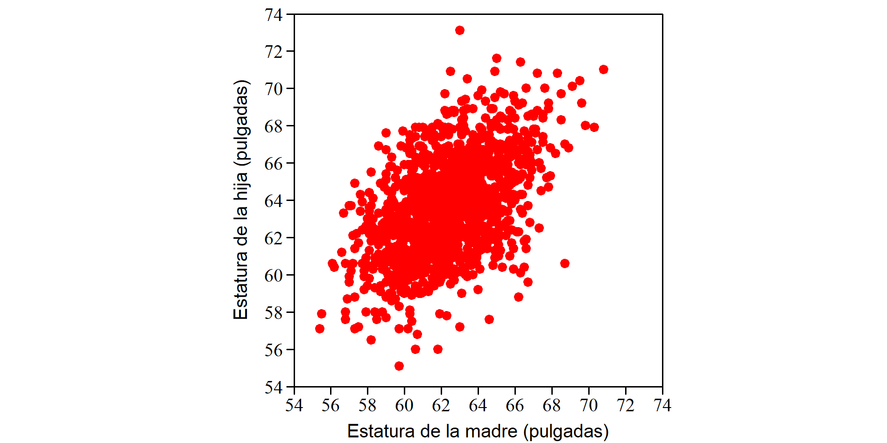
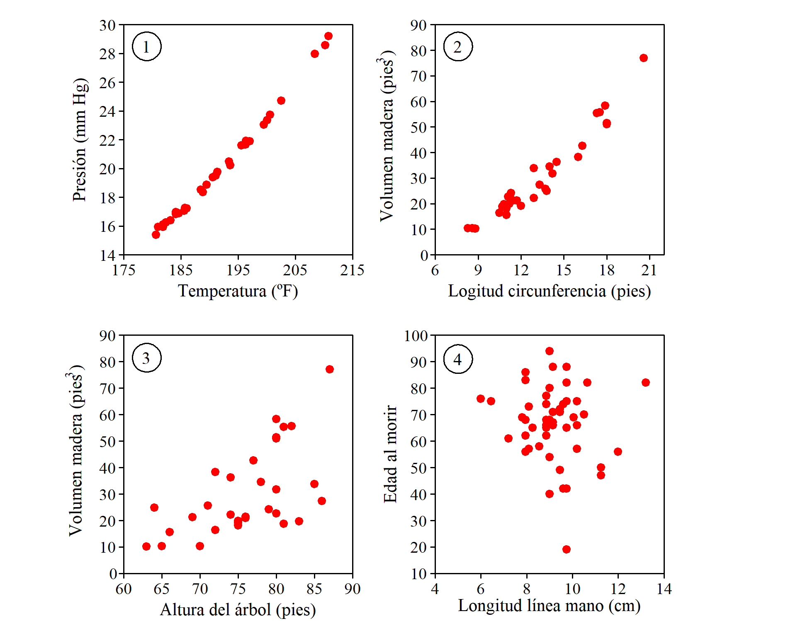
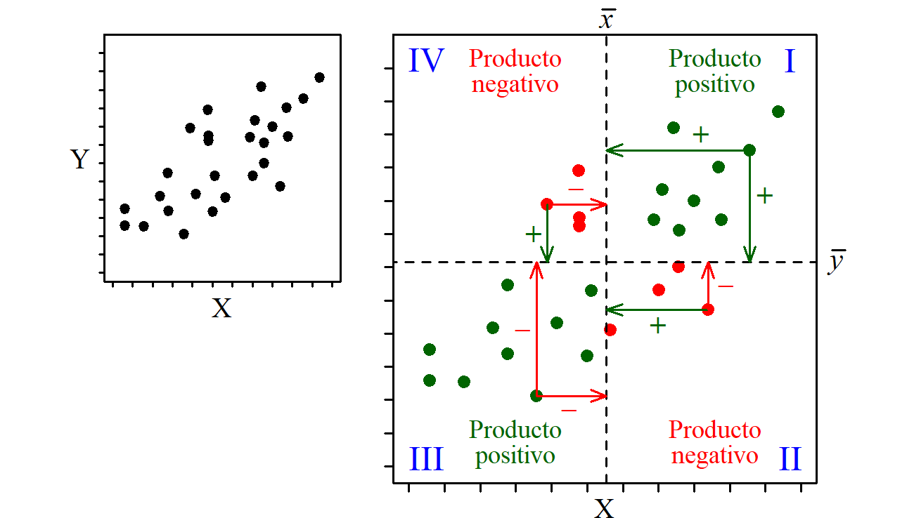
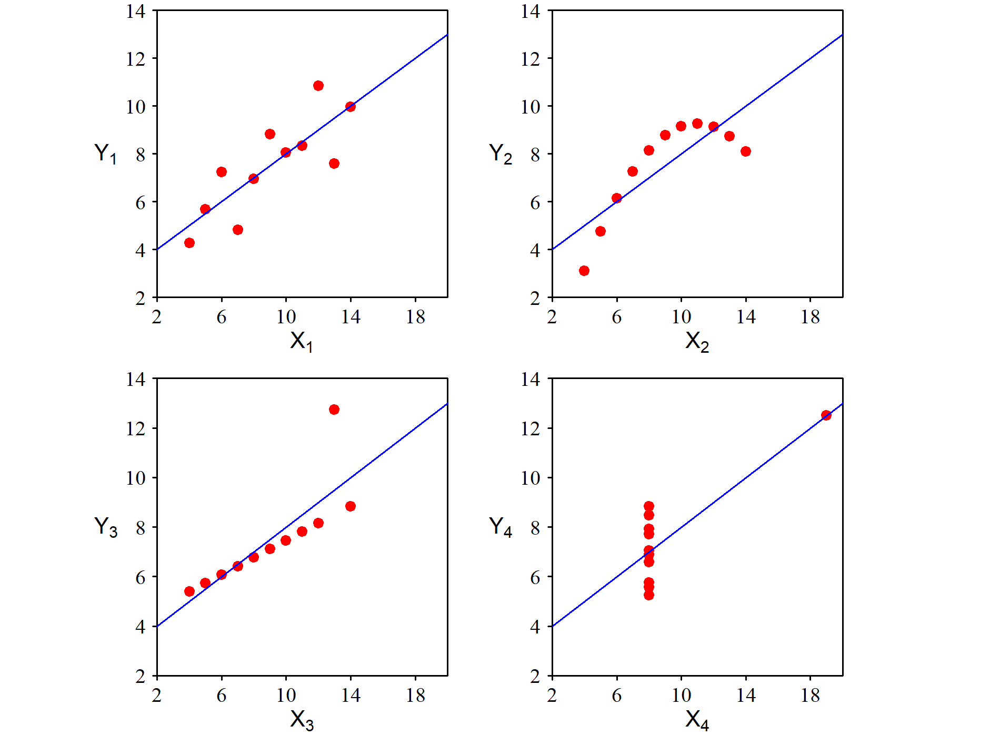
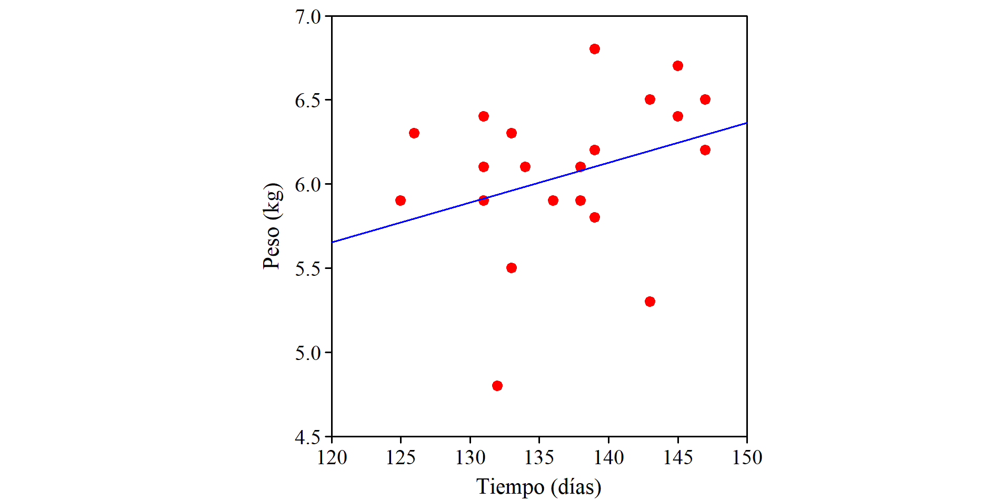
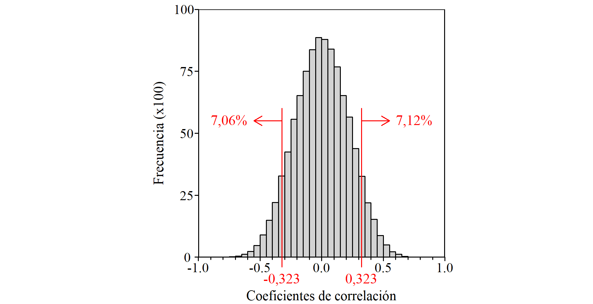
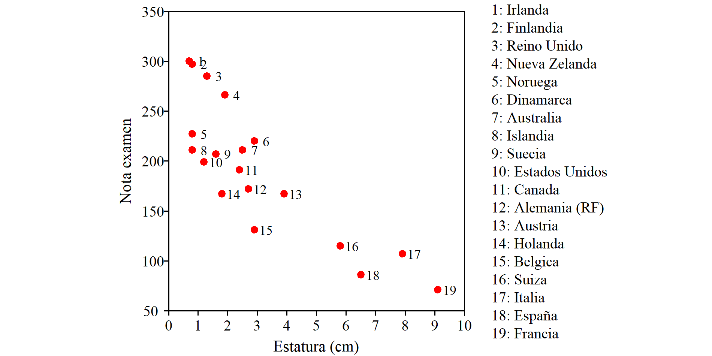
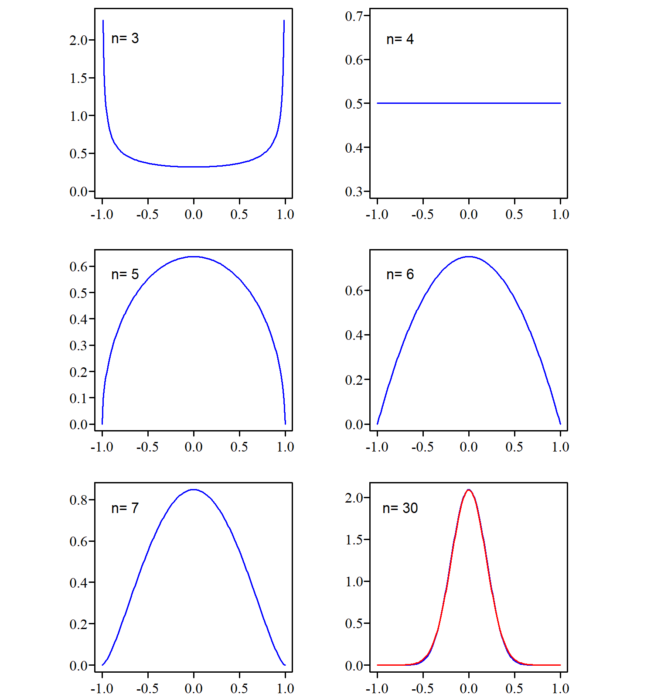

13 Medidas de relación lineal
La forma más sencilla de analizar la posible relación entre dos variables es representar sus valores en un diagrama bivariante, también llamado diagrama de dispersión o diagrama de correlación. Cada punto corresponde a una observación (un dato) y sus coordenadas \((x; y)\) corresponden a los valores de las variables consideradas.
No es arbitrario. En el eje de las \(x\) colocamos la variable explicativa y en el eje de las \(y\) la variable respuesta. Si analizamos la relación entre el peso y la estatura, en el eje de las \(x\) debemos colocar la estatura y en el eje de las \(y\) el peso. Queremos ver si la estatura (que viene dada) influye en el valor del peso.
El diagrama bivariante de la figura 13.1 se ha construido con unos datos que fueron obtenidos por Karl Pearson para estudiar la influencia de la herencia en la estatura. Cada punto representa la estatura de una mujer y la de una de sus hijas mayores de 18 años (más detalles en Weisberg 2014, pág. 2). La nube de puntos resultante muestra una clara relación estadística entre la altura de madres e hijas, cuanto más alta es la madre, más alta tiende a ser la hija.

A la vista de este diagrama surge el interés por medir la intensidad de la relación. La expresión “clara relación” que hemos usado anteriomente puede aplicarse a situaciones muy diferentes y conviene poder diferenciarlas con una medida cuantitativa. También tiene interés conocer la ecuación de la recta que refleja esa relación.
En este capítulo tratamos sobre medidas de la relación lineal entre variables, centrándonos en el coeficiente de correlación propuesto por Karl Pearson, el mismo que organizó la recogida de los datos que acabamos de comentar. En el capítulo siguiente tratamos de la obtención y la interpretación de modelos de regresión cuando tenemos una sola variable explicativa (regresión simple). El último capítulo trata sobre los modelos en que interviene más de una variable explicativa (regresión múltiple), centrándonos especialmente en los peligros ante los que conviene estar atento.
Tanto la covarianza como el coeficiente de correlación solo miden relación lineal entre variables. Dos variables pueden estar muy relacionadas mediante una función no lineal y tener una medida de relación lineal muy próxima o igual a cero.
13.1 Observación y cuantificación de la relación
Veamos los cuatro casos de la figura 13.2. El primero muestra la relación entre la presión atmosférica (en pulgadas de Hg) y la temperatura de ebullición del agua (en ºF). Los datos fueron tomados por el botánico Joseph D. Hookeren en distintos puntos de la cordillera del Himalaya a mediados del siglo XIX. Si la presión atmosférica, y a partir de ella la altitud, se podían evaluar a partir de la temperatura de ebullición del agua (muy fácil de medir) se podía evitar el uso de los frágiles y difíciles de transportar barómetros de la época. Fue un éxito, porque entre las dos variables se observa una relación casi perfecta.
El diagrama 2 muestra la relación entre la longitud de la circunferencia de los troncos de un determinado tipo de árbol y el volumen de madera que se puede obtener de ellos (Ryan, Joiner, y Ryan 1976). Se observa una estrecha relación entre ambas variables. El diagrama 3 se ha obtenido con datos de esos mismos árboles pero representa el volumen de madera en función de la altura del arbol. En este caso también se observa una relación, pero no tan clara como en el caso anterior.
Finalmente, el diagrama 4 se ha realizado con los datos de un estudio publicado por Wilson y Mather (1974) citado por Draper y Smith (1998) donde se analiza la relación entre la edad al morir y la longitud de cierta línea de la mano a partir de una muestra de 50 personas fallecidas. A la vista del diagrama queda claro que no hay ninguna relación entre ambas variables.

Aunque la información fundamental queda reflejada en el diagrama bivariante, cuando a la vista del gráfico la relación es dudosa, o cuando interesa cuantificar la relación observada, disponemos de medidas de relación lineal. Las dos de uso más habitual son la covarianza y el coeficiente de correlación, mucho más esta última por las razones que veremos a continuación.
Para la covarianza no tenemos un símbolo específico. Cuando nos referimos a modelos teóricos, o a nivel poblacional, escribimos \(\text{Cov}(X,Y)\). Para el valor calculado a partir de unos datos concretos (una muestra) escribimos \(\widehat{\text{Cov}}(X,Y)\) colocando un “sombrero” encima de \(\text{Cov}\) para indicar que se trata de un estimador. Para el coeficiente de correlación utilizamos la regla general de asignar una letra latina al valor en la muestra, en este caso \(r\) y la letra griega correspondiente, \(\rho\), para la población.
13.2 Covarianza
Aparece como en las calculadoras con funciones estadísticas, en los paquetes de software y también en las hojas de cálculo, aunque en la práctica resulta poco útil como medida de relación lineal. Aquí la incluimos porque su expresión es fácil de justificar y ayuda a entender la fórmula del coeficiente de correlación.
Deducción de la fórmula
La figura 13.3 muestra la relación entre dos variables \(X\) e \(Y\). En la derecha el diagrama se ha dividido en cuatro cuadrantes trazando una línea vertical que pasa por la media de los valores de \(X\) y una horizontal por la media de los valores de \(Y\). A estos valores medios los designamos \(\bar{x}\) e \(\bar{y}\) respectivamente. Los cuadrantes van del I al IV en el sentido de las agujas del reloj.

En todos los puntos del primer cuadrante la distancia \(x - \bar{x}\) es positiva, ya que todos se encuentran a la derecha de \(\bar{x}\). También será positiva la distancia \(y - \bar{y}\) ya que todos están por encima de \(\bar{y}\). Por tanto, el producto de ambas distancias \((x - \bar{x})(y - \bar{y})\) será positivo para todos los puntos que se hayan en el primer cuadrante.
Para los del segundo cuadrante este producto es negativo ya que la distancia \(x - \bar{x}\) sigue siendo positiva (todos los puntos se encuentran a la derecha de \(\bar{x}\)), pero \(y - \bar{y}\) será negativo (todos están por debajo de \(\bar{y}\)).
En el tercer cuadrante el producto de las distancias es positivo porque ambas distancias son negativas y en el cuarto vuelve a ser negativo ya que \(y - \bar{y}\) es positivo pero \(x - \bar{x}\) es negativo.
Con \(n\) puntos, la suma de todos estos productos será \(\sum_{i=1}^{n} (x_i -\bar {x})(y_i -\bar {y})\). Si la mayoría se encuentra en los cuadrantes I y III, tal como ocurre en la figura 13.3, el resultado del sumatorio será un valor positivo, mientras que si están en los cuadrantes II y IV el resultado será negativo. Si no existe ninguna relación entre \(X\) e \(Y\) los puntos se repartiran de forma más menos equilibrada, tendiendo a compensarse los productos positivos con los negativos y dando un resultado alrededor de cero.
La covarianza es el valor de ese sumatorio dividido por el número de puntos que intervienen en su cálculo, algo así como el promedio de los productos \((x_i -\bar {x})(y_i -\bar {y})\). Si nuestro interés no es conocer la covarianza de los datos disponibles, sino estimar su valor en la población, dividimos por \(n-1\) en vez de por \(n\), por la misma razón que lo hacemos cuando estimamos el valor de la varianza. Como lo habitual es esto último, escribimos la fórmula de la forma:
\[ \widehat{\text{Cov}}(X,Y) = \frac{\sum_{i=1}^{n} (x_i -\bar {x})(y_i -\bar {y})}{n-1} \]
Propiedades
La covarianza tiene un gran protagonismo en el terreno de los modelos teóricos, pero apenas se usa para valorar la relación lineal en un conjunto de datos. Para este menester tiene el inconveniente de que su valor depende de las unidades utilizadas.
Si se calcula la covarianza entre la estatura de madres e hijas con los datos representados en la figura 13.1 cuyas unidadess son pulgadas (in) se obtiene un valor de 3,005 in2. Sin embargo, si cambiamos las unidades a cm (1 pulgada = 2,54 cm) el gráfico tiene el mismo aspecto y el grado de relación sigue siendo exactamente el mismo, pero ahora el valor obtenido es 19,39 cm2, y si las estaturas se expresan en metros tenemos que la covarianza es igual a 0,0019 m2.
Por otra parte, para su valoración no tenemos ningún marco de referencia que nos permita evaluar si el valor obtenido es grande o pequeño. Todos estos problemas quedan resueltos con el uso del coeficiente de correlación.
Dados unos valores de \(X\), la máxima covarianza no se obtiene cuando los valores de \(Y\) se alinean según una recta. Por ejemplo, sean los valores de \(X\) = 1, 2, 3, 4 y 5, si los de \(Y\) son: 2, 4, 6, 8, y 10 (relación lineal perfecta) la covarianza entre \(X\) e \(Y\) es igual a 5 pero si sustuimos el último 10 por 15, la covarianza aumenta y pasa a valer 7,5. Esto no deja en muy buen lugar a la covarianza como medida de relación lineal.
13.3 Coeficiente de correlación
Para calcular el coeficiente de correlación, \(r\), entre dos variables \(X\) e \(Y\) basta con calcular su covarianza y dividirla por el producto de las desviaciones típicas de \(X\) e \(Y\), es decir:
\[ r = \frac{\frac{\sum_{i=1}^{n} (x_i -\bar {x})(y_i -\bar {y})}{n-1}} {\sqrt \frac {{\sum_{i=1}^n \left ( x_i - \bar{x} \right )^2}}{n-1} \sqrt{ \frac {\sum_{i=1}^n \left ( y_i - \bar{y} \right )^2 }{n-1}}} \]
Es fácil comprobar que desaparecen los denominadores tanto de la covarianza como de las desviaciones típicas, quedando:
\[ r = \frac{\sum_{i=1}^n \left ( x_i - \bar{x} \right ) \left ( y_i - \bar{y} \right ) } {\sqrt {\sum_{i=1}^n \left ( x_i - \bar{x} \right )^2} \sqrt{\sum_{i=1}^n \left ( y_i - \bar{y} \right )^2 }} \]
Con esta sencilla transformación se resuelven los problemas de la covarianza:
Es un valor adimensional y, por tanto, no depende de las unidades utilizadas.
Su valor está acotado entre -1 y 1 (correlación perfecta negativa y positiva repectivamente).
Que es adimensional es evidente, puesto que el numerador tiene las mismas unidades que el denominador. Que es igual a 1 o -1 cuando la relación lineal es perfecta lo demostramos en un apéndice de este capítulo usando álgebra elemental. Que está acotado entre -1 y 1 no es trivial, pero lo demostramos en un apéndice del siguiente capítulo usando el concepto de coeficiente de determinación de la recta ajustada (también se puede demostrar como consecuencia directa de la desigualdad de Cauchy-Schwarz, pero eso no son matemáticas elementales) .
A la denominación del coeficiente de correlación a veces se le añade “de Pearson” porque fue este estadístico el que lo desarrolló. Aunque existen otros coeficientes de correlación de mucho menor uso, no es necesario el añadido. Si no se dice de que tipo es siempre entendemos que se refiere al de Pearson.
Coeficiente de correlación y diagrama bivariante
El valor del coeficiente de correlación no sustituye la información que proporciona el diagrama bivariante. Un mismo coeficiente de correlación puede corresponder a situaciones muy distitnas y si solo nos dan el valor de \(r\) es imposible saber a cual de ellas corresponde.
Una demostración de la importancia de no descuidar el análisis gráfico de los datos lo constituye el llamado “cuarteto de Anscombe”, formado por cuatro conjuntos de datos que presentan el mismo coeficiente de correlación y la misma recta ajustada pero que al analizarlos gráficamente muestran situaciones claramente distintas (figura 13.4).

Correlación estadísticamente significativa
El diagrama bivariante de la figura 13.5 está construido con los datos de 29 plantas y muestra la relación entre el peso de los frutos obtenidos y el tiempo transcurrido entre la plantación y la recolección. Se ha añadido la recta de regresión ajustada a estos puntos.

Parece dar la sensación de que cuanto más se tarda en recoger los frutos mayor peso se obtiene. El coeficiente de correlación es positivo y está bastante alejado de cero, \(r=0,323\). ¿Quiere esto decir que para maximizar el peso de la cosecha vale la pena esperar a los 150 días?
Si dos variables son totalmente independientes, como dos conjuntos de números aleatorios, no por ello hay que esperar que su coeficiente de correlación sea igual a cero. Para que esto ocurra también la covarianza debe ser igual a cero y para ello se debe dar un equilibrio perfecto en los puntos de cada cuadrante para que se compensen perfectamente los productos de las distancias, lo cual es muy difícil que se dé en la práctica.
Por tanto, cuando tenemos dos conjuntos de datos que provienen de poblaciones independientes, no hay que esperar que su coeficiente de correlación sea exactamente igual a cero. Estará en torno a cero.
¿Qué significa “en torno a”? La distancia que exigimes respecto a cero para tomarnos en serio la correlación depende del número de datos de que se disponga. Si solo tenemos dos datos (dos puntos sobre el diagrama) el coeficiente de correlación valdrá -1 o 1 con independencia de la relación que haya entre esas variables, por tanto, ese resultado no tiene ningún valor. Si se tienen pocos datos se exige más distancia que si se tienen muchos porque es más fácil que -por casualidad- se obtengan valores extremos.
En nuestro caso de 22 datos ¿cuál es la distancia exigida? Vamos a generar 22 números aleatorios de una distribución Normal con media \(\mu = 137\) y \(\sigma = 6.5\) que podemos considerar que son los parámetros de la población de la que provienen los valores de los pesos, y otros 22 números aleatorios, totalmente independientes de los anteirores, en este caso también de una distribución Normal, pero con parámetros \(\mu = 6\) y \(\sigma = 0.5\) para simular los valores del tiempo hasta la recogida. Cuando se calcula el coefiente de correlación con ese conjunto de datos simulados se obtiene un valor que corresponde a muestras de poblaciones independientes. Este proceso se puede repetir muchas veces y cada vez se obtiene un valor del coeficiente de correlación que corresponde a una situación de variables independientes.
Hemos repetido este proceso 100.000 veces, de manera que hemos obtenido 100.000 valores del coefiente de correlación entre dos conjuntos de datos de origen similar a los nuestros y que son absolutamente independientes. Los resultamos obtenidos se resumen en el histograma de la figura 13.6 ===Esto hay que explicarlo mejor===

A la vista de este histograma, podemos afirmar que si nos hubiera salido un coeficiente de correlación de, por ejemplo 0,8, podríamos afirmar con un riesgo de equivocarnos muy pequeño que nuestras variables estan correlacionadas porque si fueran independientes un valor como ese o mayor prácticamente no se da nunca. Sin embargo, si nuesto valor fuera \(r=0,2\) no podríamos decir que existe correlación porque valores como ese, e incluso mayores, son muy habituales entre variables independientes cuando se calcula con muestras de \(n=22\) observaciones. ===todo esto hay que redactarlo mejor===
En nuestro caso tenemos \(r=0,323\) se trata de una distancia de cero “normal” si no hay relación entre ambas variables…
Hablar de las tablas, de sus características básicas y de que trataremos de como se han construido en el siguiente capítulo.
===Esto hay que explicarlo mejor===
Correlación no implica relación causa-efecto
===empezar comentando el gráfico===
Que dos variable presenten un coeficiente de correlación estadísticamente significativo (esten correlacionadas) no significa que el cambio en una provoque -sea la causa- del cambio en la otra.
Puede ocurrir que haya una tercera variable no considerada relacionada con las dos que se observan, por ejemplo, se dice que hay una alta correlación entre el número de bomberos que acuden a apagar un incendio y los daños que ese incendio causa, pero, naturalmente, a nadie se le ocurre enviar menos bomberos para que haya menor daños porque estas dos variables, aunque están correlacionadas y en el diagrama bivariante se observe una nube de puntos que marca una clara tendencia de que al aumentar el número de bomberos aumentan los daños, en este caso la variable oculta relacionada con las dos que observamos es la magnitud del incencdio, relacionada con los daños y con el número de bomberos. Existen numerosos ejemplos chistosos de este tipo de situaciones…

También puede ocurrir que la relación sea debida al azar. Si exploramos muchos pares de variables, seguro que algunas apareceran con una relación estrecha, aunque en realidad no tengan nada que ver. La página web https://www.tylervigen.com/spurious-correlations contiene muchos ejemplos de este tipo.
Curiosidad sobre el coeficiente de correlación
Si solo tenemos n = 2 puntos sobre el diagrama bivariante, el coeficiente de correlación solo puede tomar los valores -1 y 1, ambos con la misma probabilidad . Si tenemos n = 3 aparece una distribución muy rara tanto para explicar la variabidad ligada a fenómenos naturales como en los modelos teóricos que usamos habitualmente: los valores más frecuentes están en los extremos (-1 y 1) mientras que en torno al centro (alrededor de cero) se dan los de menor probabilidad.Para n = 4 todos los valores del coeficiente de correlación son igualmente probables , para n = 5 la distribución de probabilidad tiene forma de semielipse, y a media que aumenta el valor de n va apareciendo la típica forma de campana. (figura).

Las distribuciones de la figura +++ se puede reproducir por simulación o directamente usando la función densidad de probabilidad de coefiente de correlación, aunque su expresión es un poco aparatosa:
\[ f(r \mid \rho =0) = \frac{ \Gamma \left [\frac{1}{2} (n-1) \right ]} { \Gamma \left [\frac{1}{2} (n-2) \right ] \sqrt{\pi} } (1-r^2)^{\frac{1}{2}(n-4)} \]
Aclarar la notación Esta función no converge a la distribución Normal cuando n se hace grande, ya que está definida solo entre -1 y 1 mientras que el dominio de la distribución Normal no está acotado.
APÉNDICE 9.1
Coeficiente de correlación cuando la relación lineal es perfecta
Si todos los puntos están alineados tenemos que: \(y_i =a+bx_i\) y también: \(\sum y_i = \sum (a+bx_i)\), de donde \(n\bar{y} = na + bn \bar{x}\), es decir: \(\bar {y} =a+b \bar{x}\). Así pues, podemos escribir el numerador de la expresión de \(r\) de la forma:
\[\begin{equation*} \begin{split} \sum_{i=1}^n \left ( x_i - \bar{x} \right ) \left ( y_i - \bar{y} \right ) &= \sum_{i=1}^n \left ( x_i - \bar{x} \right ) \left ( a+bx_i - (a+b\bar{x}) \right ) \\ &= \sum_{i=1}^n \left ( x_i - \bar{x} \right ) b \left ( x_i - \bar{x} \right ) = b \sum_{i=1}^n \left ( x_i - \bar{x} \right )^2 \end{split} \end{equation*}\]Con un razonamineto similar, en el denominador podemos escribir el término en que aparecen los valores \(y_i\) de la forma: \[\begin{equation*} \begin{split} \sqrt{\sum_{i=1}^n \left ( y_i - \bar{y} \right )^2 } &= \sqrt{\sum_{i=1}^n \left ( a+bx_i - ( a+b \bar{x} ) \right )^2 } = b \sqrt{ \sum_{i=1}^n \left ( x_i - \bar{x} \right )^2 } \\ \end{split} \end{equation*}\]
Recuperando el término correspondiente a los valores de \(x\), el denominador nos queda:
\[ \sqrt {\sum_{i=1}^n \left ( x_i - \bar{x} \right )^2} \cdot b \sqrt{\sum_{i=1}^n \left ( x_i - \bar{x} \right )^2 } = b \sum_{i=1}^n \left ( x_i - \bar{x} \right )^2 \]
Igual que el numerador, aunque con la diferencia de que su valor seguro que es positivo (proviene de un producto de desviaciones típicas) mientras que el valor de \(b\) en el numerador será positivo o negativo según sea el signo de la pendiente de la recta.
Así pues, si los puntos se alinean según una recta, el valor del coeficiente de correlación será -1 o 1 según la pendiente sea negativa o positiva.